Icon
Name
Function

Refresh
Performs an immediate update of the network scan.
Export Topology
Performs a Topology Export to disk.
PRONETA Basic’s Network Analysis gives you a quick overview about which devices are installed in your PROFINET network, and how they are connected with each other. The Network Analysis also lets you view and change various network parameters of the devices, like IP addresses, device names etc.
Different networks can be compared with each other, and the devices can be configured automatically or manually.
In Online mode, PRONETA Basic will scan the PROFINET network for present devices, in either a single sweep or continuously. The main screen is divided in three sections:
A Graphical View (1)
A Device Table (2) of accessible devices
The Device Details (3) showing the parameters of a particular device
Display of the Device Table and Device Details can be toggled by clicking on the respective triangle icons on the separator bands in the PRONETA Basic window.
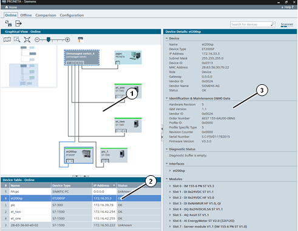
|
NOTE |
If the network size exceeds 500 devices, not all devices may be reliably detected during a scan. Crashes of PRONETA Basic may occur in this case. |
Function Bar
The following functions are available in the function bar:
|
Icon |
Name |
Function |
|
|
Refresh |
Performs an immediate update of the network scan. |
|
Export Topology |
Performs a Topology Export to disk. |
A topology export can be performed in a number of different formats:
This is useful to:
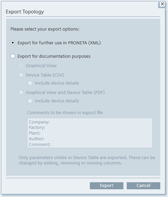
The option “Include device details” will add information about port configurations and modules to the resulting file.
The data fields contained in an exported configuration are the same as the fields currently visible in the corresponding Device Table.
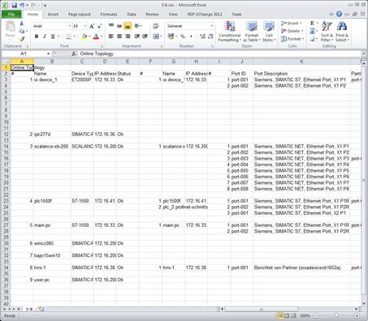
When including the Graphical View, the network topology representation will be distributed over several pages in the PDF, if the network is sufficiently large.
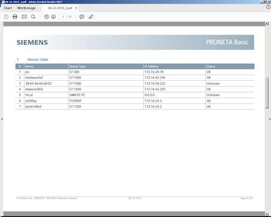
Depending on the current mode, only some of the export options will be available:
|
|
Online |
Offline |
Comparison |
Configuration |
|
XML |
✔ |
x |
x |
x |
|
Graphical View |
✔ |
✔ |
✔ |
x |
|
Device Table (CSV) |
✔ |
✔ |
✔ |
x |
|
Graph.View + Device Table (PDF) |
✔ |
✔ |
x |
x |
To the right of the function bar, there is an input box (1) which allows you to search for particular devices. The search term you enter will be matched against all information fields (e.g. device names, types, network parameters, …)..
Search is case-insensitive and does not allow for wildcards or regular expressions.
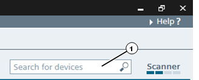
Matches of your search are highlighted in the Graphical View and the Device Table through orange shading.
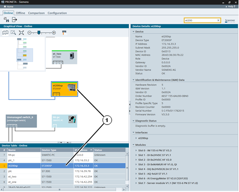
On the far right of the function bar, there is a scanner status indicator (1) which displays the status of the current network scanning cycle.
Each network scanning cycle is divided into four phases, represented by the segments of the scanner status indicator. A network scan is complete when the indicator has gone through all four segments.
A right-click on the status indicator brings up a context menu with one item:
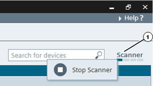
|
Icon |
Name |
Function |
|
|
Start Scanner |
Toggles the network scan: If it is currently running, it will be stopped, and vice versa. |
|
|
Stop Scanner |
While the scanner is stopped, no network load is generated, and no changes to the topology are acquired. In the General Settings dialog you can control whether PRONETA Basic will scan the network only once or continuously upon start of the scanner.
The Graphical View is a graphical display of the PROFINET network, its devices and their connections to each other either during a current network scan or from a previously stored reference network. The Graphical View occupies the top left corner of the PRONETA Basic window.
While over empty space, clicking and subsequent dragging will shift the visible network segment. Hovering the mouse pointer over a device will change the open hand to an arrow and bring up a Device Tooltip with basic information about that device.
Device Display
The device status is indicated by different colors of the device symbol and its borders:
Tool Bar
In the top section of the view, there is a tool bar with a variety of function icons:
|
Icon |
Name |
Function |
|
|
Show Overview of Topology |
Toggles a topology overview within the Online View. (See Topology Overview) |
|
|
Zoom Selection |
Lets you draw a rectangle inside the Graphical View. Once you release the mouse button, the view will zoom to display the rectangle area. |
|
|
Zoom Fit to Screen |
Zooms the view back in a way that all network devices fit inside the view. |
|
|
Zoom Bar |
Zoom into the network or back by dragging the handle to the right or the left, respectively, or clicking on “-“ or “+”. (You can also zoom into and out of the Graphical View by placing the mouse over the view and using the scroll wheel.) |
|
|
Show Physical Connection Types |
Indicates different transmission mediums used in different colors. (See Device Connection Types) |
The Topology Overview is a view in the top left segment of the Graphical View which helps with the examination of large networks. It shows a schematic of all devices found during the current network scan, regardless of the zoom factor selected for the Online View.
The network segment currently visible in the Online View is indicated by a light blue partly transparent rectangle. Drag the rectangle across the Topology Overview to move the visible network segment in the Online View.
Drag the right or bottom border of the Topology Overview to change the size of the view.
If the option “Show Physical Connection Types” from the tool bar has been selected, connections between devices are color-coded as follows:
Black: Copper Ethernet wiring
Orange: Fiber optical connection
Two parallel lines indicate a ring topology.
For devices which are displayed without any connection to other devices, the required information could not be gathered.
Hovering over a device will bring up a tooltip which displays:
Device name
Device type
IP address
Firmware Version (where applicable)
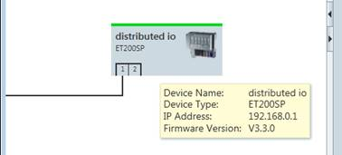
Hovering over a device port displays:
Interface name
IP address
Port ID
Name of the neighbor
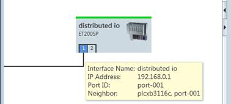
By right-clicking on any device in a Graphical View or in the corresponding Device Table, you can bring up a context menu with various functions.
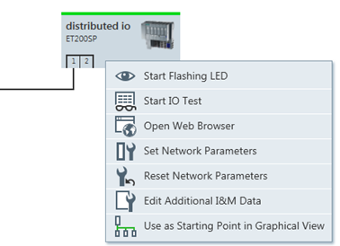
Not all menu entries are available for all devices with the actual entries depending on the state of the device.
|
Icon |
Name |
Function |
|
|
Flash LED |
Sets the LEDs on the physical device to flashing for easy identification. |
|
Start IO Test |
Immediately launches an IO Test Task with the selected device. |
|
|
Open Web Browser |
Opens your PCs web browser and establishes a connection to the device’s web server. |
|
|
|
Start (Stop) Flashing LED of Duplicates in Name/IP address |
Like “Flash LED”, but flashes the LEDs of all devices which share their name and/or IP address with the selected device. |
|
Set Network Parameters |
Opens a popup window which allows you to set various networking parameters of the chosen device. For details, see Set Network Parameters. |
|
|
Reset Network Parameters |
Performs a factory reset of the device’s IP address and device name. If the command is chosen from the Device Table, it is possible to reset several selected devices simultaneously. |
|
|
|
Edit Additional I&M Data |
Opens a popup window which lets you enter data concerning identification and maintenance (“I&M”) of the device, like location and date of the installation. |
|
|
Use as Starting Point in Graphical View |
Redraws the Graphical View with the chosen device in the upper left corner. |
This table lists the devices found either during your current network scan (Online mode only), or in a stored reference network. It is displayed below the Graphical View of the PRONETA Basic window.
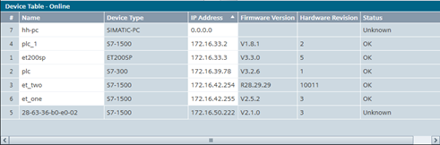
The table can display a large amount of different device data. Right-click anywhere in the table header fields to bring up a menu from which you can select the information fields you wish to display.
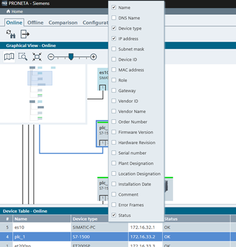
Orange borders around table cells indicate duplicate device names or IP addresses.
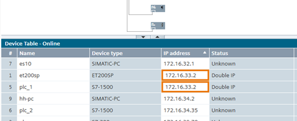
White cells inside the table allow information to be entered. The new values will be written to the respective device immediately when the cell loses focus. (This is an alternative way to the use of the context menu entry “Set network parameters”)
A left click on a column header will sort the table according to the data in this column in ascending order, another click reverses the order. Small triangles “▲” or “▼” in the column header indicate the sorting criterion.
Dragging a column header with the mouse rearranges the table columns accordingly.
Right-clicking on any table entry brings up the current device context menu.
In the right part of the PRONETA Basic window, a details view is displayed.
This view shows additional device information for a device which has previously been selected in the Device Table
Branches of the tree of device properties can be opened and collapsed by clicking the triangular symbol of the corresponding branch.

For Non-PROFINET devices which are connected to PROFINET devices and provide an Asset Management Record (AMR), data from the AMR is displayed in the Device Details, too.
This popup window allows the immediate input of the following parameters for an individual device:
Device name
Static or DHCP IP configuration
Plus, where applicable:
IP address
Network mask
Address of the gateway router
Checking the box “Apply settings permanently” will ensure that the new parameters are retained across a power-off of the device.
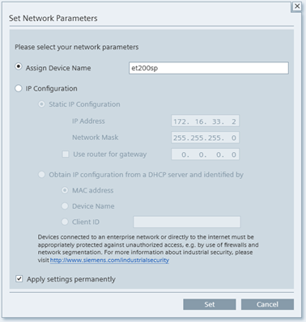